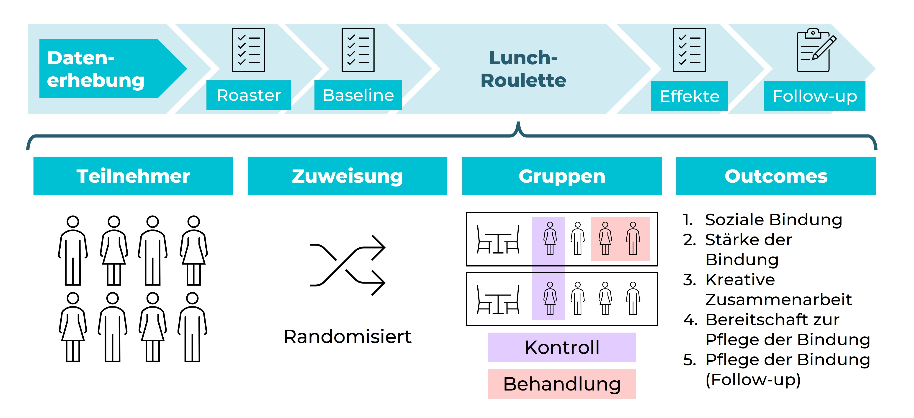

Die Forschungsfrage
Innovation entsteht selten im Alleingang. Sie gedeiht, wenn Menschen mit unterschiedlichen Hintergründen und komplementärem Wissen zusammenkommen. In verteilten, organisationsübergreifenden Umgebungen bleibt dieses Zusammentreffen jedoch häufig dem Zufall überlassen. Harold Gamero, Prof. Dr. Tim Schweisfurth und Harini Marudavanan vom ODCE stellten die Frage: Lässt sich Serendipität gezielt herbeiführen? Und wirkt dies auch dort, wo organisationale Grenzen Kooperation typischerweise verhindern?
Das Experiment
Das Forschungsteam konzipierte und führte vier Runden Feldexperimente in einem Technologiepark in Hamburg durch, in dem rund 800 Mitarbeitende aus 120 kleinen und mittelständischen Unternehmen tätig sind. Teilnehmende wurden per Zufall Tischen bei kostenlosen „Lunch-Roulette"-Mittagessen zugeteilt — informellen Begegnungen, die gezielt Menschen aus verschiedenen Firmen zusammenbrachten, die sich sonst nicht getroffen hätten.
Daten wurden zu vier Zeitpunkten erhoben: eine Woche vor dem Mittagessen, zwei Tage danach, bis zu drei Monate später (als Teilnehmende einen Folgemahlzeiten-Gutschein mit einer beliebigen Teilnehmerin oder einem beliebigen Teilnehmer einlösen konnten) sowie acht Monate nach der Intervention in einer qualitativen Befragung. Insgesamt wurden 876 dyadische Interaktionen analysiert.

Abbildung 1: Forschungsdesign mit Lunch-Roulette-Intervention und den fünf gemessenen Outcomes über individuelle und strukturelle Grenzen hinweg. Quelle: ODCE / TUHH.
Die Ergebnisse
Die Befunde sind bemerkenswert. Teilnehmende, die beim Lunch-Roulette am gleichen Tisch saßen, waren:
Eine Metaanalyse über alle fünf Outcomes bestätigte einen starken, homogenen Interventionseffekt (I² = 0,0 %) — die Vorteile waren konsistent und nicht durch einen einzelnen Indikator getrieben.
Zentraler Befund: „Teilnehmende, die am gleichen Tisch saßen, waren mehr als 21-mal so wahrscheinlich dabei, eine neue berufliche Verbindung zu knüpfen — und diese Effekte blieben auch über Branchen-, geografische und Geschlechtergrenzen hinweg stabil."
Überwindung organisationaler Grenzen
Die Studie untersuchte zudem, ob die Wirkung engineerter Begegnungen typischen Kooperationsbarrieren standhält. Die Ergebnisse zeigen ein differenziertes Bild:
| Grenztyp | Barrierewirkung? | Überbrückt durch Lunch-Roulette? |
|---|---|---|
| Geografische Distanz | Schwach negativ (p = ,034) | Vollständig neutralisiert |
| Branchenunterschiede | Stark negativ (p < ,001) | Vollständig überbrückt |
| Netzwerk-Nicht-Redundanz | Stärkste Barriere (p < ,001) | Teilweise überbrückt |
| Geschlechterunterschiede | Moderat negativ (p = ,016) | Weitgehend überbrückt |
| Funktionale Unterschiede | Moderat negativ (p = ,039) | Teilweise überbrückt |
| Hierarchische Distanz | Schwach / nicht signifikant | Kaum überbrückt |
Acht Monate später
Eine qualitative Folgebefragung acht Monate nach der Intervention zeigte, dass einige Beziehungen fortbestanden — Teilnehmende hielten sporadisch Kontakt, entwickelten Vertrauen und planten in einzelnen Fällen konkrete Kooperationen. Andere nannten fehlende geschäftliche Synergien oder organisationalen Wandel als Hindernisse. Auffällig war, dass viele den sozialen und psychologischen Mehrwert hervorhoben: das Gefühl, wahrgenommen zu werden, Komfort und Zugehörigkeit — Hinweise darauf, dass engineerter Zufall nicht nur unmittelbare Kooperation fördert, sondern auch relationale Infrastruktur aufbaut.
Bedeutung für die Praxis
Die Studie zeigt, dass niedrigschwellige, kostengünstige Maßnahmen sinnvolle grenzüberschreitende Beziehungen erzeugen können — dort, wo traditionelle Strukturen versagen. Für Verantwortliche in wissensintensiven Umgebungen — Technologieparks, Innovationscluster, Hochschulcampus und hybride Organisationen — bietet das Lunch-Roulette ein praktisches, evidenzbasiertes Instrument zur Förderung organisationsübergreifender Zusammenarbeit ohne hohen Koordinationsaufwand.
Über die Forschung
Diese Studie wurde von Harold Gamero, Prof. Dr. Tim Schweisfurth und Harini Marudavanan am Institut für Organisationsdesign und Collaborative Engineering der Technischen Universität Hamburg (TUHH) durchgeführt. Sie basiert auf Feldexperimenten in einem deutschen Technologiepark mit 876 dyadischen Interaktionen über vier experimentelle Durchläufe. Die Inhalte dieser Meldung wurden mit der Institutsleitung abgestimmt.